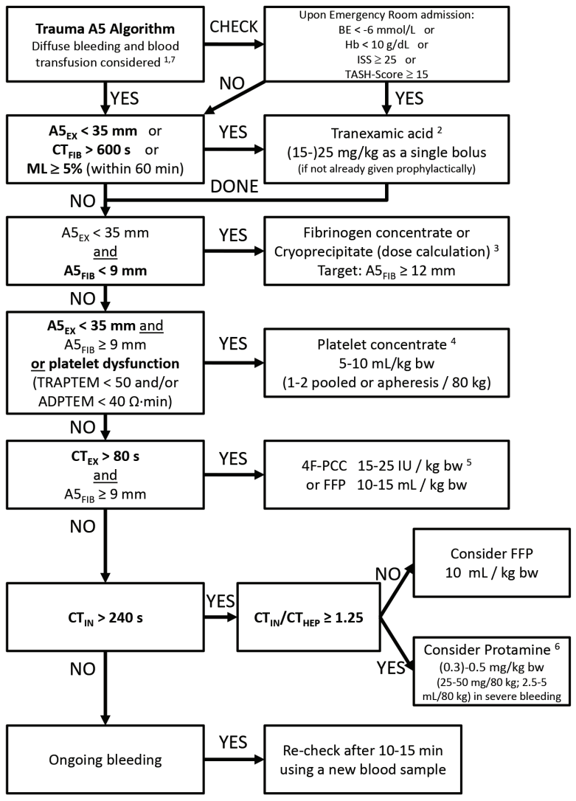

Point-of-Care Algorithms

Tap image to enlarge in a new window.
ROTEM Trace Guide ('Temogram')
Characteristic ROTEM Traces


ROTEM Assays Guide (EXTEM, FIBTEM, etc.)

Point-of-care coagulation algorithms and ROTEM traces: Görlinger K, et al. Viscoelastic coagulation testing and target-guided hemostatic therapy.